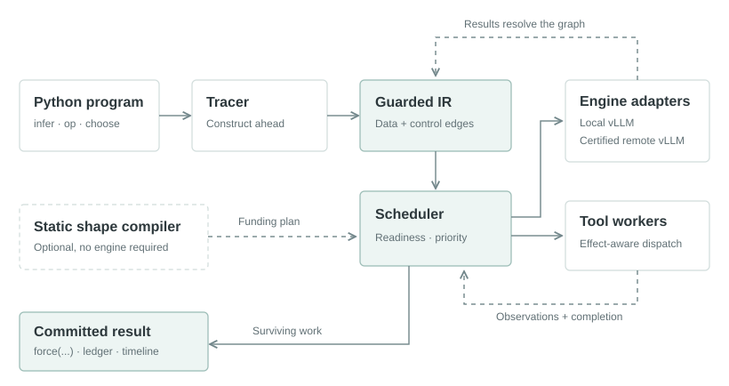
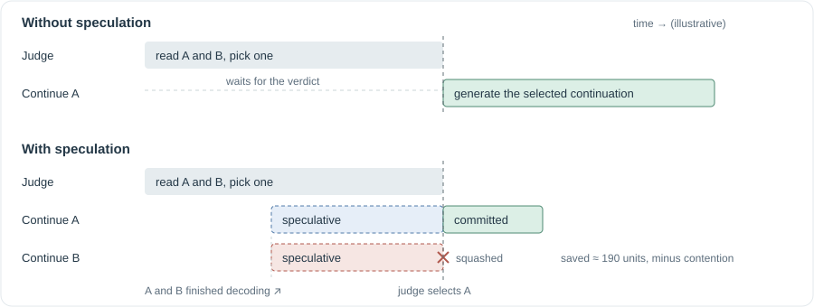

Architecture¶
AgentIR turns a Python agent program into a graph of model requests, Python operations, tool executions, and decisions. The tracer constructs that graph while the runtime executes its ready parts. A request may start before its keep-or-cancel decision is known, but only after its input data exists.
This page follows one invocation through the system. You do not need the internal types to use the first program.

{kind=link}
1. A program describes possible work¶
A typical program has four operations:
- Generate candidate answers with
expand. - Evaluate them with a Python
opor another model request. - Rank candidate indices with
choose. - Continue from the chosen handle with
infer.
The program manipulates handles, not generated strings. A handle preserves how its prompt was built, which requests it depends on, and which decisions must eventually select it. This gives the runtime enough information to schedule safely.
2. The tracer builds a guarded graph¶
The tracer lowers model calls into engine nodes, tools into tool nodes, and selections into decisions. Python operations produce asynchronous values on the control plane. A guard describes the decisions under which a node survives.
Consider a judge choosing between answers A and B. The continuation of A needs A's text. It does not need the judge's text to construct its prompt. Its connection to the judge is a keep-or-cancel condition.
When infer receives an unresolved choice, the tracer creates a continuation for every possible selected member, each with its own guard. This transformation is called hoisting. It is the central source of branch speculation.
| Connection | Example | What execution waits for |
|---|---|---|
| Data dependency | A continuation includes answer A | A's output must exist |
| Control dependency | Keep A's continuation only if the judge chooses A | The decision must resolve before commitment; execution may begin earlier |
| Effect ordering | Run a tool after another operation settles | The predecessor must settle; the tool's own effect contract still applies |
3. The scheduler chooses ready work¶
The scheduler runs on a dedicated event-loop thread. It gives committed requests priority, then funds eligible speculative requests within a guard-depth window and a concurrency budget.
Engine adapters own model execution and cancellation. The in-process adapter uses vLLM's request API and automatic prefix caching. A separate tool scheduler and worker pool execute Python tools. The runtime also owns tracer and control-plane worker pools, so waiting for a tool does not occupy an engine request slot.
The scheduler never obtains missing input bytes by guessing across a data dependency. Tool observation prediction works by explicitly constructing candidate observations, then guarding their continuations with a later verification decision.
4. Results resolve decisions¶
An engine request can finish while its guard is still unresolved. Its output is available to eligible speculative descendants, but the request is not yet committed.
When a decision resolves, surviving work can commit. Losing work is squashed, and running engine requests are cancelled. A public force(...) waits for both the relevant data and its publication conditions. Unknown-effect Python operations and tools wait for commitment before running their bodies.

{kind=link}
5. Diagnostics explain the outcome¶
The ledger records when each node registered, became ready, issued, finished, and resolved its guard. It distinguishes committed, wasted, and failed work. Timelines visualize these events; differential checks compare the selected computation with an independent serial execution.
A completed request, a committed request, and a faster invocation are three different observations. The verification section explains how to establish each.
How the components fit together¶
| Component | Responsibility | Read next |
|---|---|---|
core |
Symbolic prompt spines, identities, guards, handles, wire formats | Identity and the IR |
tracing |
Public DSL, graph construction, tool policies, deferred slots | Core concepts |
execution |
Scheduling, runtime lifecycle, vLLM adapters, tool execution | Scheduling and commitment |
compile |
Optional symbolic shape graph and scheduling plan | Static compilation |
algos |
Agent search and refinement programs built from the DSL | Algorithms |
diagnostics and bench |
Semantic checks, traces, datasets, measurements | Timelines |
integrations.harbor |
Terminal environment bridge and trial records | Harbor |
Continue with installation, then build a program that follows this exact path.